← 返回阅读库 · 原论文目录
论文讲解阅读文档 · 新模型 · v051
BiFormer Vision Transformer with Bi-Level Routing Attention[2303.08810]
视频时长 00:06:46；讲解文字 3,433 字符；提取讲解画面 17 张。按视频原顺序阅读，每段文字保留时间戳。
文字来自整段视频的自动语音转写，按自然停顿分段，并与 PPT / 论文页面 / 演示画面对齐。未将讲解压缩为摘要；术语、数字和口述公式请结合画面及原论文核对。 阅读稿已校正规范部分明确术语误识别；原始逐字稿和每处修改记录另行保留。
讲解画面为源视频截图（640×360），不是可编辑 PPT 文件。全片按每秒 2 帧扫描内容变化，逐步展开页保留；连续动画保留代表画面。清晰度受源视频限制。
下载完整资料包 · 含离线 HTML、PDF、Word、全部 PPT 画面和字幕。
原论文与材料
BiFormer: Vision Transformer with Bi-Level Routing Attention · 下载完整 PDF（13 页）
按时间阅读
00:00:00–00:00:07 · 画面 001
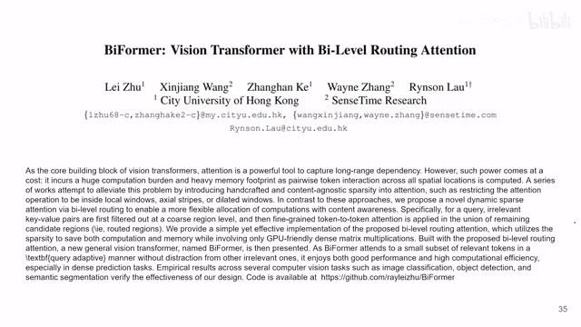
00:00:00–00:00:07 · 画面 001大家好,今天我们来快速介绍一篇论文 Bi-former, Vision Transformer with Bi-level Routing Attention这篇论文很早就出现在我们的文档里面了，是我们的一位热心的朋友他编辑进来的。但是说起来非常惭愧，在这个文档里面的很多文章真的是各路神仙，我实在是对他们的背景不是特别的了解，因此很多我都没有办法真正的出一个视频去介绍。那么借这个机会，非常诚挚的邀请各位作者，那么如果你想在这个频道介绍你的工作
00:00:07–00:00:45 · 画面 002
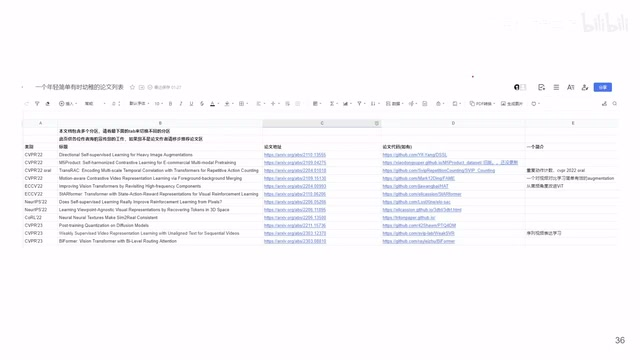
00:00:07–00:00:45 · 画面 002那么麻烦你准备好你的 presentation，我们可以约一个时间，然后我来给你录制剪辑，然后上传到我们这个频道上。那么如果你有任何的提议建议，也非常感谢你能告诉我好的，那么回到我们这篇文章啊，这篇文章研究的就是 transformer 里面这个 attention。我们吐槽了很多年了，你一个 token 跟所有的 token 都去做 attention。对图片来说呢，这其实不是一个太明智的设计。那么在之前的工作里面有 localattention，就 Swin Transformer 那一套的有这个 axialattention，有这个 dilatedattention，还有这个 deformableattention，这个好像我们之前也说过
00:00:45–00:01:47 · 画面 003
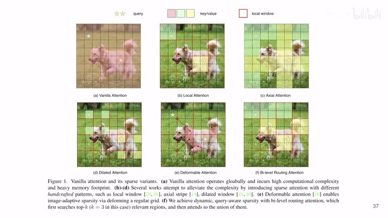
00:00:45–00:01:47 · 画面 003那么这些工作呢，都是通过减少 query 和它匹配的这个 key 的数量来减少这个内存的消耗也好，来减少你的运算也好。那么本篇文章呢，同样的思路，这个 bi-level routing attention 它呢，跟这个 local attention 很像，也是我们的 query 只是跟一个一个的 local patch 来做，不是说跟所有的 token 去做这个 attention。但是呢，你在这个 local attention 里面，你的 query 和这个 key 对应的范围是根据你的空间位置来决定的
那么在本文里面，它是一种更灵活的 query 和 key，就是你虽然适合一小个区域去做 attention，但是这个小的区域可能是在图片中的任何地方，这是一个非常灵活的设计。那么这个实现本质上就是先从一个宏观的尺度，我这里把这张图像分成一个个大的 window，就是大的 local patch，然后我先去看哪些 local patch 它们之间是有关系的
00:01:47–00:01:54 · 画面 004
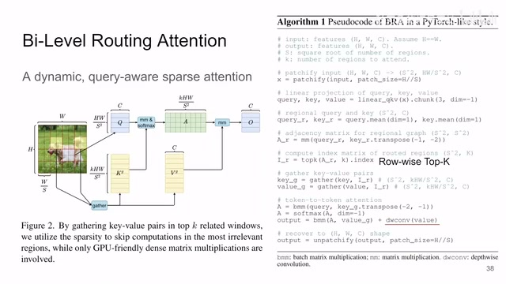
00:01:47–00:01:54 · 画面 00400:01:54–00:01:59 · 画面 005
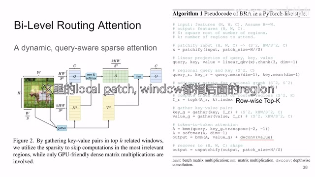
00:01:54–00:01:59 · 画面 00500:01:59–00:02:21 · 画面 006
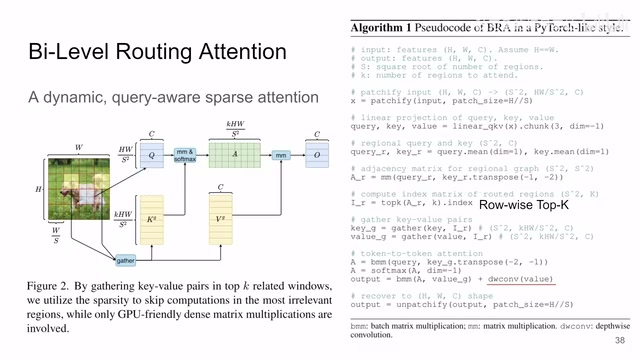
00:01:59–00:02:21 · 画面 006那么确定了这些之后呢，我再进到这个 local patch 里面，每一个小的这个 token，每一个小的 patch，然后他们在这个相互之间做 attention。你也可以把它理解成为是一种 hierarchical 的使用 attention，先是粗糙的做一遍 attention，确定一下谁值得做，然后呢再去细致的做 attention。那我们直接看到代码啊，那么进来的图像呢，你把它分成这种小的 patch 还有这个大的 patch 的组合。那么这里这个大的这个 local window 就是这个二乘二的
00:02:21–00:02:22 · 画面 007
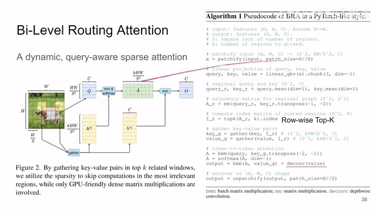
00:02:21–00:02:22 · 画面 00700:02:22–00:04:02 · 画面 008
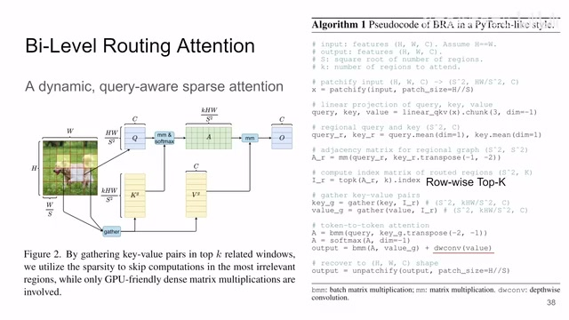
00:02:22–00:04:02 · 画面 008这么一个 block 啊，他叫这个 region 吗？然后呢，你每一个 region 里面就有这么多的小的 patch。那这里一个 region 里面有 4 个小的 patch。然后呢，你就做标准的这个 linear projectionquery key value，针对每一个小的这个 token，小的 patch 去做一下。那么再往下一步呢，这里作者使用了每一个 region 里面的所有的小的 patch 的 query 和 key 他们的均值来代表说这个 region 整个这一个 region 他自己的 query 和 key
就是你一个二乘二里面四个 patch 对吧，你四个 patch 的 query 平均一下就是这个大的 region 的它的 query。然后呢，就是每一个区域的 query 和其他所有的区域的 key 做一个这个乘法，你就得到一个这类似于 attention 的这么一个矩阵。那么这里重点来了，就是我不希望我的 local region 和所有的 region 都做 attention。我这里呢，就针对每一个 region 选 k 一个和它呈出来的这个值最大的就是关系最近的这几个 region。就在这一步我确定了说就是这些 local region 之间他们呢做 attention，其他的 region 呢就不考虑了。就相当于把大的这个区域给它划分好了
那么把这个区域划分好了，你就根据这个区域把真正的这个区域里面的每一个小的 patch 的 query 和 key 都提出来。提出来之后呢，你再去做标准的 attention 算出来这个 attention 矩阵，然后呢和 value 搭在一起就好了。那注意呢，这里有一个细节，就是当你这个 attention 矩阵乘上这个 value 之后呢，还加了一个 depthwise convolution 处理过的这个 value。那这个东西是什么呢？这个东西呢，它来自于这篇文章，它本质上的意思呢，就是一个 local enhancement。
00:04:02–00:04:35 · 画面 009
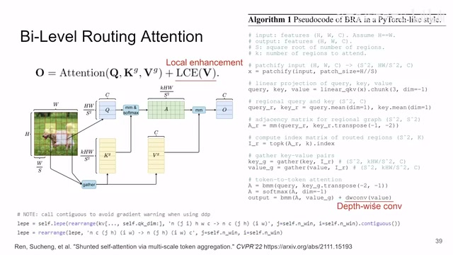
00:04:02–00:04:35 · 画面 009就是用一个 depth wise convolution 把你这个区域里面的 value 再做一次投影，再做一次处理。那么最直白的理解呢，就是你把这一串 value token 给它还原成图像的原来这个图像的样子，然后呢，在这个 value 上面做一个 depth wise 的 convolution。做完之后呢，再对应的加回到这个 attention 里面。那么加上这个之后呢，本文提出的这个 bi-level routing attention 这个模块呢，它就是一个完整的模块了。
然后呢，我们来看到当你把这个 attention 替换到 transformer 里面传统的 attention 之后，你就开始组建你的网络吧。那么这个呢，就是作者应用产生的这个 BiFormer。你可以看到呢，它还是沿用了这种 hierarchical 的不断减小 token 不断加深长度的这么一个结构。那至于里面每一个 BiFormer 的 block 呢，它区别于经典的 transformer，它还加了一个 3x3 的 depthwise convolution 在最前面，那还是来强化我们局部的信息交换。
00:04:35–00:04:42 · 画面 010
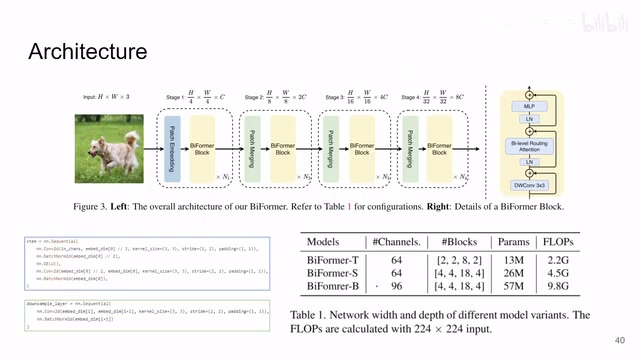
00:04:35–00:04:42 · 画面 01000:04:42–00:04:43 · 画面 011
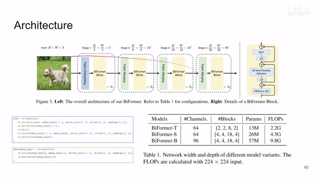
00:04:42–00:04:43 · 画面 01100:04:43–00:05:27 · 画面 012
00:04:43–00:05:27 · 画面 012那么这些呢，也都是之前论文里面提到的。感兴趣的朋友呢，你进到原文里面看他引用的那些文章。那么当然这里有三个不同大小的这个网络嘛，你可以选。但这个 patch merging、downsample 这个东西没有什么好讲的。但是一开始做这个 patch embedding 的时候呢，你可以看到呢，他还是通过两层的卷积来先把这个图像减小到一定尺寸，然后呢再往后继续做的。那么直接来看结果啊，经典的这个 classification 的任务还有 segmentation 的任务。
00:05:27–00:05:32 · 画面 013
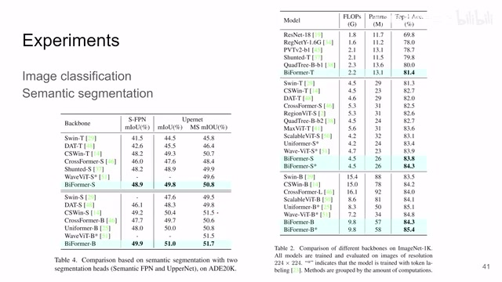
00:05:27–00:05:32 · 画面 013然后呢，还有这个 object detection、instance segmentation 等等啊，感兴趣的朋友呢，你去看一下他的论文，他的具体的实验配置就好了。然后呢，还有一些 ablation，比如说这个地方我用什么样的 attention 去做效果最好，这个是很有价值的。然后呢，这个是我们怎么样从 swin 的结构变到这个 biformer 的结构
00:05:32–00:05:41 · 画面 014
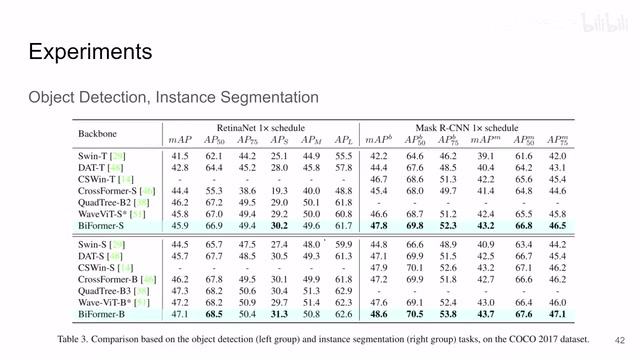
00:05:32–00:05:41 · 画面 01400:05:41–00:06:04 · 画面 015
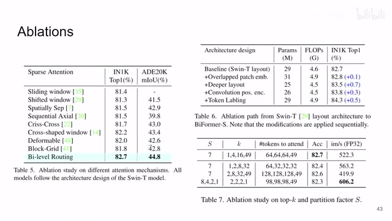
00:05:41–00:06:04 · 画面 015它的一些设计的叠加还有就是我这些超参数选多少对吧？我一个 region，我一个大的 local window，我选择多少其他的 window 去做 attention。那么这些都有作者还提供了一些 visualization，就是我的 query 在这里的时候，我都跟哪些的区域做了 attention，然后具体里面的 attention 的值是多少。
00:06:04–00:06:45 · 画面 016
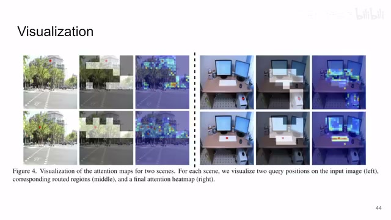
00:06:04–00:06:45 · 画面 016那么总的来说呢，本文是通过一个层次化的方法，先从一个大的 region 来决定谁去做 attention，然后再细化去做具体的每一个 attention，来达到一个节约资源的目的。方法呢，也是非常的直接。那么以上呢，就是我对这个论文的一个快速的整理。第一还是感兴趣的朋友呢，非常推荐你去阅读原文。那么第二就是如果你有任何想。
分享了自己的工作，请准备好你的 presentation，我可以帮你录制剪辑，然后呢上传到我们这个频道里。好的，那么感谢您的收看，再见。
00:06:45–00:06:46 · 画面 017
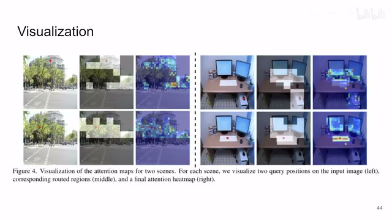
00:06:45–00:06:46 · 画面 017转写与来源说明 · 0 个自动复核提示
保留 18 个原始语音片段，0 个片段触发自动复核提示。提示仅用于定位可能的术语、重复或识别问题，不等于已确认错误。
讲解画面为源视频截图（640×360），不是可编辑 PPT 文件。全片按每秒 2 帧扫描内容变化，逐步展开页保留；连续动画保留代表画面。清晰度受源视频限制。
原视频：paper/合集_2026-10-16_新模型/[论文简析]BiFormer Vision Transformer with Bi-Level Routing Attention[2303.08810].mp4
SHA-256：7d02a0336d5fe92c11b664ad42ff24676a14fbdcb229d9ec4ab822a4486ae126
全文按视频语音与画面制作。原论文可从上方链接下载；完整资料包保留全文、原始逐字稿、字幕和校对记录。